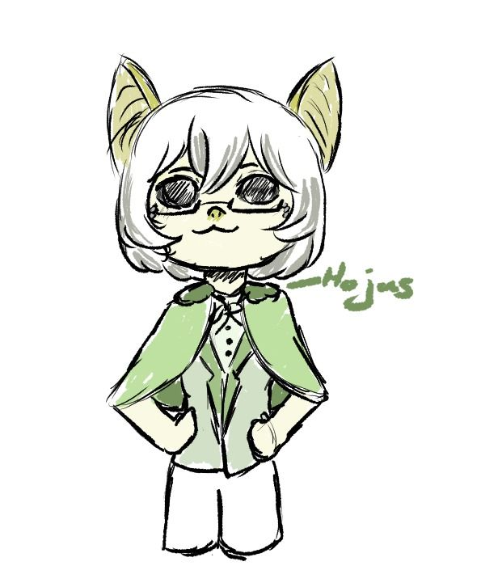

AHORA ESTÁS BAJO EL HECHIZO...
Ponte cómodo, la eternidad absoluta no ha hecho más que comenzar.
LORE
El lore todavía se encuentra oculto... Tendrás que esperar a que la maldición se anule.
🖼️ FANARTS
Fragmentos visuales dejados por los artistas, gracias por vuestro apoyo 🖤

×

❓ DATOS
¿Eres chico o chica?
El personaje "Suzu Kurai" no tiene género, pero lo interpreta un hombre muy sensualón.
¿Cuántos años tienes?
Tengo 21 años.
¿De dónde eres?
Vivo en España, pero mi alma es de la noche eterna.
¿Qué tipo de contenido haces?
Me gusta hacer directos de juegos variados, charlar con la comunidad y crear un ambiente relajado y divertido.
¿Cómo puedo apoyar tu trabajo?
La mejor forma de apoyar es siguiéndome en Twitch, participando en los directos y compartiendo el contenido con tus amigos. También puedes considerar suscribirte o donar si te gusta lo que hago, pero lo más importante es que disfrutes del contenido.